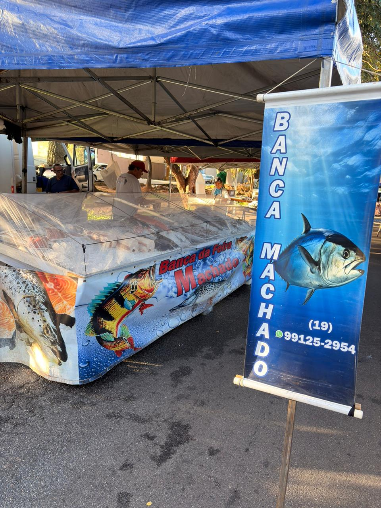

Nossa história
A história da Banca da Feira Machado começou dentro da própria família, passando de geração em geração e sempre ligada ao trabalho com peixes.
Wolnei (dono da Banca hoje) começou a vender peixe ainda muito jovem, por volta dos onze anos de idade. Depois, trabalhou como office boy, mas acabou voltando para a feira, onde passou a trabalhar como empregado de seu irmão (mais velho) que foi o que deu inicio a banca. Wolnei trabalhou até entregando peixe na rua.
Com o tempo, seu irmão parou de trabalhar na feira e a banca passou a seguir com a família: ele, seu pai e seu irmão (mais novo) continuaram tocando o negócio. Desde então, o trabalho com peixe se tornou parte da sua vida.
Hoje, quem cuida de tudo é ele, mantendo viva essa história com dedicação, atendimento próximo e compromisso em oferecer peixe fresco e de qualidade para os clientes.

O que valorizamos
🐟 Frescor
Trabalhamos com produtos selecionados para levar qualidade e sabor à mesa dos clientes.
🤝 Confiança
Atendimento próximo, simples e honesto, como é tradicional nas feiras.
💰 Preço justo
Produtos de qualidade com preço acessível e variedade para diferentes receitas.
Por que comprar conosco?
- História familiar: uma banca construída com trabalho, tradição e dedicação.
- Experiência: anos de vivência no comércio de peixes e frutos do mar.
- Atendimento direto: contato próximo com os clientes nas feiras de Campinas.
- Qualidade: cuidado na escolha dos produtos oferecidos todos os dias.